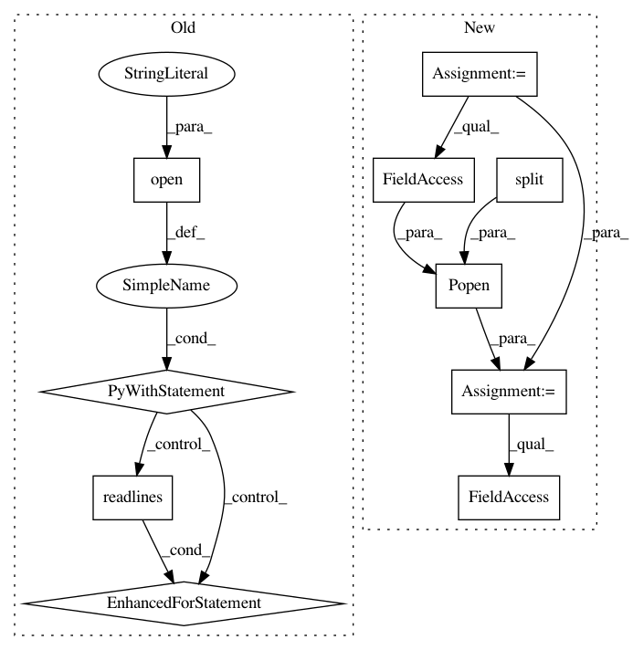

3eea3791dc36fbfc521b45b9eebd854c73908b62,dataPrepScripts/GetTruth.py,,OutputVariant,#Any#,4
Before Change
var_fp = open(var_fn, "w")
with open(vcf_fn, "r") as vcf_fp:
for row in vcf_fp.readlines():
row = row.strip().split()
if row[0][0] == "//":
continue
if row[0] != ctgName:
continue
last = row[-1]
varType = last.split(":")[0].replace("/","|").replace(".","0").split("|")
p1, p2 = varType
p1 = int(p1)
p2 = int(p2)
p1, p2 = (p1, p2) if p1 < p2 else (p2, p1)
print >> var_fp, row[0], row[1], row[3], row[4], p1, p2
if __name__ == "__main__":
parser = argparse.ArgumentParser(
description="Extract variant type and allele from a Truth dataset" )
After Change
ctgName = args.ctgName
var_fpo = open(var_fn, "wb")
var_fp = subprocess.Popen(shlex.split("gzip -c" ), stdin=subprocess.PIPE, stdout=var_fpo, stderr=sys.stderr, bufsize=8388608)
vcf_fp = subprocess.Popen(shlex.split("gzip -fdc %s" % (vcf_fn) ), stdout=subprocess.PIPE, bufsize=8388608)
for row in vcf_fp.stdout:
row = row.strip().split()
if row[0][0] == "//":
continue
if row[0] != ctgName:
continue
last = row[-1]
varType = last.split(":")[0].replace("/","|").replace(".","0").split("|")
p1, p2 = varType
p1 = int(p1)
p2 = int(p2)
p1, p2 = (p1, p2) if p1 < p2 else (p2, p1)
var_fp.stdin.write(" ".join([row[0], row[1], row[3], row[4], str(p1), str(p2), "\n"]))
var_fp.stdin.close()
var_fp.wait()
vcf_fp.stdout.close()
vcf_fp.wait()
In pattern: SUPERPATTERN
Frequency: 3
Non-data size: 10
Instances
Project Name: aquaskyline/Clairvoyante
Commit Name: 3eea3791dc36fbfc521b45b9eebd854c73908b62
Time: 2017-09-13
Author: aquaskyline@gmail.com
File Name: dataPrepScripts/GetTruth.py
Class Name:
Method Name: OutputVariant
Project Name: NifTK/NiftyNet
Commit Name: 0a3c1aa4d67cb9c49f22a87bef180c07dfafec8a
Time: 2017-06-16
Author: wenqi.li@ucl.ac.uk
File Name: testing/get_gpu_index.py
Class Name:
Method Name:
Project Name: NifTK/NiftyNet
Commit Name: aa495c2ace9444aa5028f699ae62dddef45ab7d9
Time: 2017-06-15
Author: wenqi.li@ucl.ac.uk
File Name: testing/get_gpu_index.py
Class Name:
Method Name: